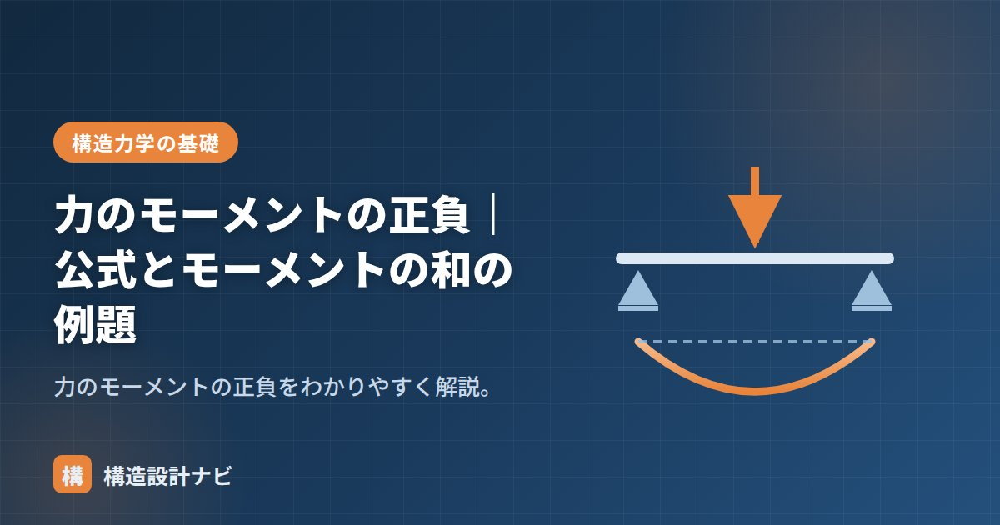

力のモーメントの正負｜公式とモーメントの和の例題

力のモーメントは回転の向きによって正負（符号）を区別します。向き（時計回り・反時計回り）という言葉のままでは足し算・引き算ができないため、片方の向きを「＋」、もう片方を「−」と数値の符号に置き換えます。こうして符号を付けることで、複数のモーメントを代数的に足し引きし、全体として物体がどちら向きにどれだけ回ろうとしているかを1つの数値で表せるようになります。
- 正負は回転の向きを符号に置き換えたもの。これで複数のモーメントを足し引きできる。
- 本サイトの公式はM＝±F×L（時計回りが＋）。
- 符号付きで合計したΣMが0であれば、その点まわりで回転せずつり合っている。
なぜ正負をつけるのか
「時計回りに20N·m」「反時計回りに6N·m」という言葉のままでは、2つを合計するときに毎回向きを確認しながら計算しなければならず、複雑な骨組みでは計算ミスの元になります。そこで、あらかじめ1つの回転向きを正（＋）、もう1つを負（−）と決めておけば、あとは符号付きの数として単純に足し算するだけで、全体の回転の向きと大きさが求められます。この考え方は、反力の計算やQ図・M図の作成など、構造力学のほぼすべての計算の土台になっています。
正負の意味と公式
本サイトでは時計回りを正（＋）、反時計回りを負（−）とします（向きの判断そのものの見分け方は→モーメントの向き・見分け方）。
符号は「回転の向き」だけを表すもので、力の大きさそのものには関係しません。同じ大きさの力でも、支点から見た位置や向きが変われば符号が反転します。
モーメントの和の例題
点Oから右に2m、上向き10Nの力（時計回り）と、点Oから右に1m、下向き6Nの力（反時計回り）が働くとき、点Oまわりのモーメントの和は？
M₁ ＝ ＋10×2 ＝ ＋20N·m（時計回り）
M₂ ＝ −6×1 ＝ −6N·m（反時計回り）
ΣM ＝ 20 − 6 ＝ ＋14N·m（時計回り）
このように符号を付けて合計すると、全体としてどちら回りに、どれだけ回そうとするかが分かります。ΣM＝0なら回転せずつり合いです。
3つの力がある場合の計算例
点Oから右に3m、下向き8Nの力（時計回り）、右に1.5m、上向き4Nの力（反時計回り）、右に4m、下向き5Nの力（時計回り）が働くとき、点Oまわりのモーメントの和は？
M₁ ＝ ＋8×3 ＝ ＋24N·m
M₂ ＝ −4×1.5 ＝ −6N·m
M₃ ＝ ＋5×4 ＝ ＋20N·m
ΣM ＝ 24 − 6 ＋ 20 ＝ ＋38N·m（時計回り）
力の数が増えても、やることは同じです。各モーメントに符号を付けて、単純に足し合わせるだけで全体の回転傾向が求まります。
計算の途中で符号規約（時計回りを正／負）を変えてしまうと、合計が正しく求まりません。1つの問題の中では最初から最後まで同じ規約を使います。また、力の単位（N・kN）や距離の単位（m・mm）がそろっていないと符号以前に値そのものが誤るため、計算前に単位をそろえておくことも重要です。
検算をしていて一番冷やっとするのは、途中の式で誰かが符号規約をこっそり反転させているケースだ。ΣMの合計だけ見ても気づきにくいので、各項の符号がどの向きに対応しているか一つずつ遡って確認している。
「モーメントの向き」「モーメントのつり合い」「回転方向の覚え方」「モーメントの単位換算」をどうぞ。
正負の決め方（図解）
初学者がつまずくのは「どっちが正なのか」を暗記しようとするからです。実はどちらを正にしても構いません。反時計回りを正にすればモーメントの合計が＋10kN·mになる問題も、時計回りを正にすれば−10kN·mになるだけで、「反時計回りに10kN·m回そうとする」という物理的な意味は変わりません。混乱を避けるコツは、計算用紙の隅に「反時計＋」と書いてから始めることです。
曲げモーメントの正負は別ルール
ややこしいのは、力のモーメントの正負と曲げモーメントの正負がまったく違う約束事だという点です。
| 力のモーメント | 曲げモーメント | |
|---|---|---|
| 何を区別する？ | 回転させようとする向き | 部材の変形の向き（どちらが引張か） |
| 正の定義 | 反時計回り（慣用） | 下に凸に曲がる（下側が引張） |
| 符号を変えると | 答えの符号が反転するだけ | 引張側が逆になる＝配筋位置が変わる |
| 実務での意味 | 計算過程での約束 | 鉄筋を入れる位置に直結 |
RC造では、曲げモーメントの符号は「どちらに主筋を入れるか」という設計判断そのものです。単純梁の中央は下側が引張になるので下端に主筋を密に入れ、連続梁の支点上は上側が引張になるので上端に入れます。力のモーメントの正負が「計算上の便宜」であるのに対し、曲げモーメントの正負は物理的な意味を持つ——この違いを押さえておくと、混同しなくなります。
よくある質問
Q1. モーメントの正負はどちらを正にすべきですか？
どちらでも構いません。一般には反時計回りを正とすることが多いですが、時計回りを正としても最終的な答えの意味は変わりません。絶対のルールは「1つの計算の中で一貫させること」だけです。計算を始める前に紙の隅に決めた向きを書いておくと、ミスを防げます。
Q2. 答えがマイナスになったら計算ミスですか？
いいえ。マイナスは「仮定した向きと逆向きに回っている」という意味であり、計算ミスではありません。そのまま「反時計回りを正としたので、実際は時計回りに◯kN·m」と読み替えれば正解です。
Q3. 力のモーメントの正負と曲げモーメントの正負は同じですか？
違う約束事です。力のモーメントの正負は回転の向きを表す計算上の取り決めですが、曲げモーメントの正負は部材のどちら側が引張になるかを表します。RC造では曲げモーメントの符号が主筋を入れる位置に直結するため、物理的な意味を持ちます。
まとめ
- モーメントは回転の向きで正負を区別する（本サイトは時計回り＝正）。
- M＝±F×L。符号を付けることで複数のモーメントを代数的に足し引きできる。
- ΣM（符号付きの和）で全体の回転を求める。ΣM＝0でつり合い。
- 計算の途中で符号規約を変えない。単位をそろえてから計算する。